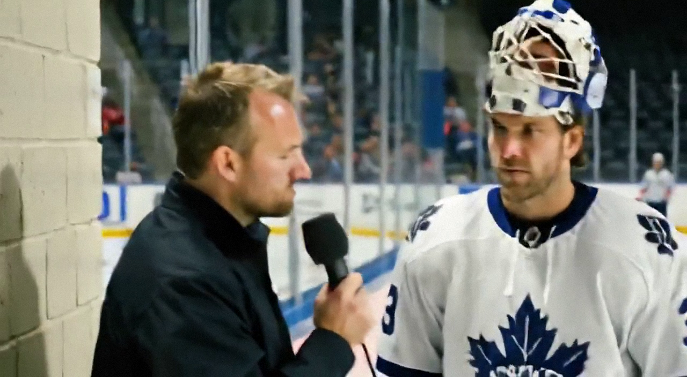

Aebischer makes the saves Roberts gave to Belfour
Toronto's 26-year-old stopped all 13 shots he faced in a 4-0 win at New York Islander, his first clean game of the season, and watched his own teammate give the credit to the wrong man.
 Jan KowalczykRinkside reporter and studio host · The Tunnel
Jan KowalczykRinkside reporter and studio host · The Tunnel
2:44 · synthetic voices, produced from the record · download
 David Aebischer84 was between the pipes for
David Aebischer84 was between the pipes for  Toronto Maple Leafs on the night they beat the New York Islanders 4-0 at
Toronto Maple Leafs on the night they beat the New York Islanders 4-0 at  New York Islanders on 2004-12-06. His 1st shutout of the season, on a night the Islanders managed 13 shots, and his 10th win in 14 starts. After the game, Gary Roberts told this desk Ed Belfour deserved the stars.
New York Islanders on 2004-12-06. His 1st shutout of the season, on a night the Islanders managed 13 shots, and his 10th win in 14 starts. After the game, Gary Roberts told this desk Ed Belfour deserved the stars.
Transcript
Jan Kowalczyk here in the corridor at Nassau Coliseum. David Aebischer, first shutout of your season, on the road, 4-0. How does that feel at ten-thirty on a Monday night?
Good, yes. Very good. We play, I think, twenty-six games now, so, yes, it is a good time for the first one. The boys in front of me, they were, I don't know, maybe too good tonight. Thirteen shots. I could barely see the puck from behind.
That's the thing I wanted to ask you about. Thirteen shots is almost nothing. You said you could barely see the puck, but a goalie has got to stay in it. What were you doing between the first and the fourth?
Well, I watch the guys. I watch the face-offs, I watch the boards. And, you know, it is a question people ask, yes? When you see the puck six times a period, you say, how does he stay awake. And I tell you honestly, you are more nervous, I think, when the game is quiet. Because you don't know when the, the one shot comes, and you must be there. If you are busy you are ready. If you are quiet, you think too much.
The special teams. Were you working in the third period, or was the game gone by then?
I think, I think we were in our own end a little bit in the third. Not a lot. But, yeah, the boys were killing, we were blocking, and I was watching them block, I was talking to them. 'Keep it out, keep it out.' You don't want to be, you don't want the, the one goal in your net when, when it's four and zero, you know?
And what about the third period specifically? Was there a moment where you thought, it's done, let's just get through this? Or were you still locked in?
No, no. I stay. The, the third period is where you can get hurt, yes? A team at home, they push, they want something for the fans. And we, we were not as clean in our own end, I think. Not as sharp. But nobody, nobody made me make a save I didn't expect. That is the team.
One thing, David. Gary Roberts was here a little while ago, and I asked him about the game, and he said Belfour was standing on his head tonight, one and a half stars. Ed didn't play. You did.
I know. He said that?
He did, on this desk.
Well. Gary is, Gary is a great man and a great player, I respect him very much. But, the stars, they are given to the guy who played tonight, I think. And, you know, maybe the, the name Belfour is bigger. That is, that is how it is, and I can live with it. But tonight was me. And I am happy about that. I am not upset, but I am, I will be honest, I am glad you asked me.
Eleven straight. Nobody in this league is playing better hockey than Toronto right now. What's that streak doing inside that room?
Nothing, actually. I think, I think that is the good thing. Everyone asks about the streak. And in the room, I look around, and nobody is, nobody is doing, celebrating. We just, we just want the next game. Gary, Ed, Mats, they all played this game before. They know what December is. You win in December and nobody cares in April if you stop. So we just keep, we just keep working.
David Aebischer, first time on this desk, shutout on this desk. Thank you, enjoy the bus back.